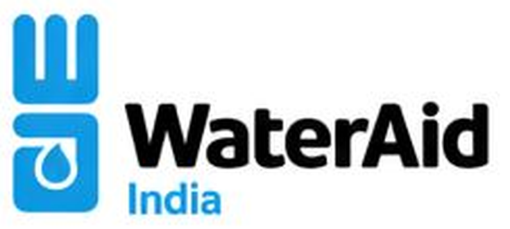
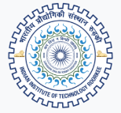
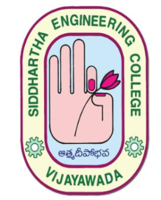

About us
About CRF
An independent, multidisciplinary research organisation closing the gap between rigorous research and real-world policy and implementation.
Who we are
CRF was founded by a PhD researcher in Geo-Environmental Engineering. We are registered as a Section 8 not-for-profit company under the Companies Act, 2013, and sustain ourselves through diversified research, consulting and capacity-building work rather than donor dependence.
Research should not remain limited to journals. It should influence policy, implementation and sustainable development.
Structure
Section 8 not-for-profit, MSME registered
Model
Research, consulting, training and advisory
Offices
Dehradun (registered office) and Lucknow
Reach
Pan India and overseas
Focus areas
Where we work
Water and Sanitation
Water security planning for urban local bodies.
Waste and Circularity
MSW, waste-to-energy and circular economy.
Wastewater
Adsorption-based treatment and green materials.
LCA and Carbon
Life cycle assessment and GHG accounting.
Climate and Air
Climate risk, heat and pollution vulnerability.
Data, GIS and Policy
ML, GIS, NLP policy-gap analysis and ESG.
Why partner with CRF
Our difference
Independent
Research free from undue funder or political influence.
Evidence to action
Solutions designed to move from journals into policy and implementation.
Professionally run
A diversified institution, not a donation-dependent NGO.
Transparent
Sound governance, with all surplus reinvested into impact.
Our vision
A globally respected institution
We aim to link academia, industry, government and communities, and to build a network of partners and university chapters across Asia, Africa and beyond.
Registration
CIN U72100UT2026NPL021839
PAN AAOCC0190J
MSME Udyam UDYAM-UK-05-0138787
Research identifiers
ISNI 0000000530668957
Ringgold ID 854389
Our people
Researchers, engineers and policy specialists, a structured internship programme and honorary mentors supporting co-authored publications.
Programme partners
Working together on the ground


Our researchers and interns come from
Academic network
 Delhi Technological UniversityDelhi
Delhi Technological UniversityDelhi
IIT RoorkeeUttarakhand Gurukula Kangri VishwavidyalayaHaridwar
Gurukula Kangri VishwavidyalayaHaridwar FUT MinnaNigeria
FUT MinnaNigeria
VR Siddhartha Engineering CollegeVijayawadaWe also have links with IIT (BHU) Varanasi, UPES Dehradun and partner universities abroad, and honorary mentors who support international, co-authored publications.
Partner with us
Universities, NGOs, municipalities and industry: let us explore a collaboration.
Start a conversation